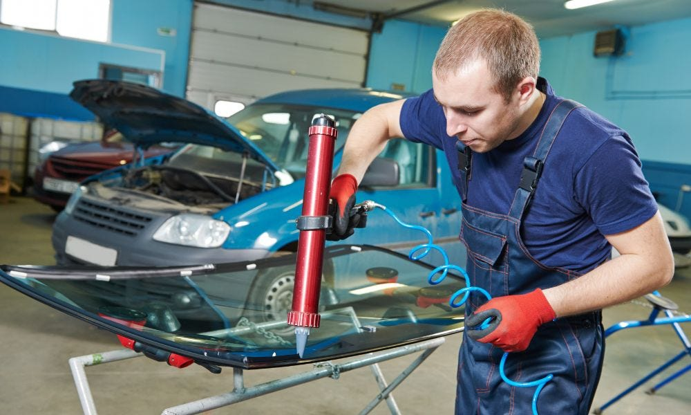
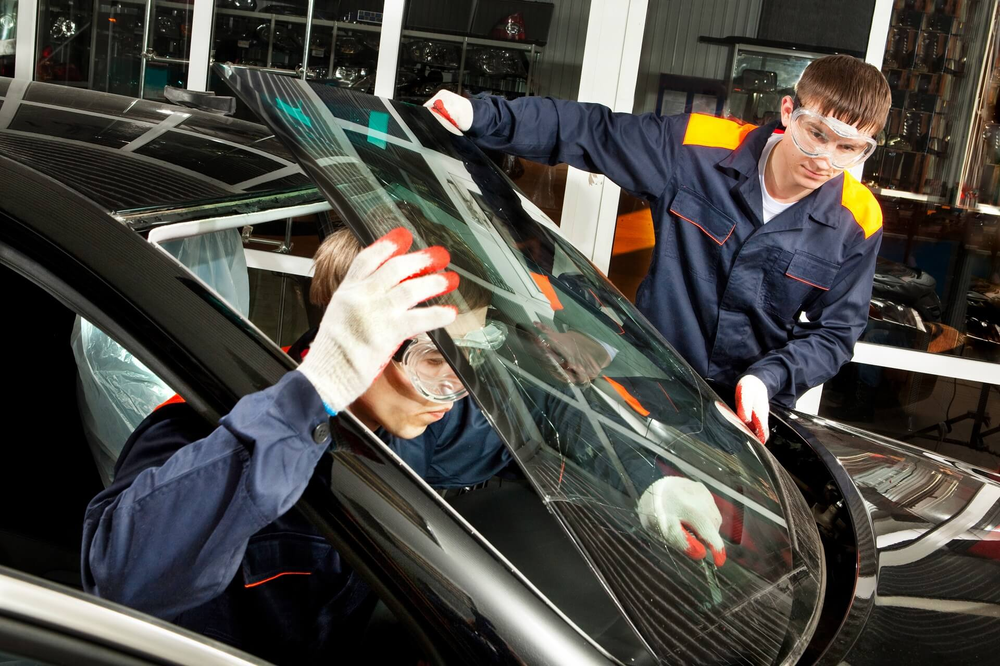
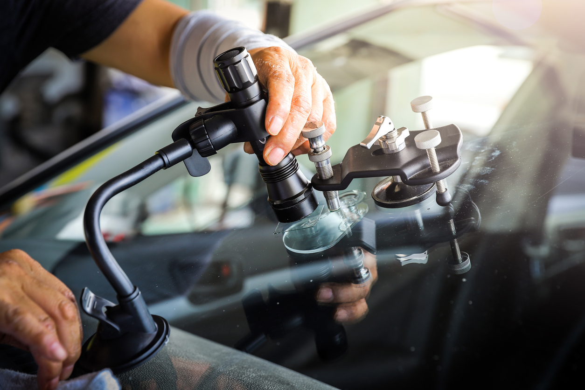
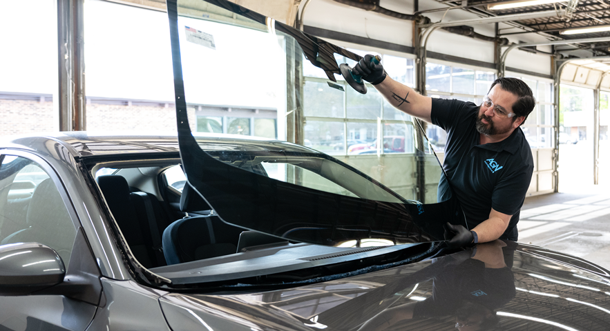

Services We Offer
Auto Glass Repair
Auto glass companies are responsible for Auto glass services,
including repairs and replacements of auto glass. Auto glass
damage occurs when a force hits your windshield or window, which
leaves a small or large crack.
Mobile Auto Glass OC is one of the top-notch companies, the most
devoted company. We provide a large selection of branded glass for
your automobiles. In addition, Mobile Auto Glass OC provides a
warranty on all repairs and replacements without any conditions
attached, which is unusual in the industry.
We are well-known for our quality since we have been installing
branded auto glass windows and windshields for a long time. We
supply Lynx, Burco, Carlite, PPG, and various other high-quality
windows and windshields made in the United States. We work quickly
and efficiently for your final items, and you will never be
dissatisfied if you choose us.

Irvine, California, is where we are located. We have a lot of
experience and have been servicing our consumers for seventeen years.
We have a long list of loyal clients who are pleased with our services
and will always select us for any type of car glass service.
Besides auto glass repair, Mobile Auto Glass OC also offers
auto glass replacement. Mobile
Auto Glass OC observed that people prefer services at their locations
and love their comfort. Mobile Auto Glass OC can now travel to your
place and provide you with the required services.
Our skilled and expert specialists may come to your home or company in
Orange County, including Irvine, Mission Viejo, Tustin, and Newport
Beach, with all of their equipment. Because we care about you and your
family, we can send our personnel right away to fix your concerns.

Auto Glass Replacement
Auto glass is made up of hard lamination, which is not easy to
break, but on these busy roads of California, small pebbles and
rocks usually hit your windshields and windows, leaving a chip or
a crack. Cracks should be repaired immediately.
Otherwise, it can be very dangerous for you and your family as
small cracks may grow into larger cracks. A
windshield replacement is
expensive and is recommended when you face a certain crash and it
leaves your vehicle’s windshield in major damage. However, a
repair is a cheap way of getting the cracks fixed.
Mobile Auto Glass OC also provides a free quotation service. You
need to visit our website and fill out the “request quote”
dialogue box to get an estimated quotation. This process will
issue you an estimated quotation for your required service. The
offered prices are reasonable and are always recommended by our
customers.
We offer free mobile auto glass servicing to your home or workplace.
The most optimal approach to get your vehicle serviced right in front
of you. Our skilled and expert specialists may come to your home or
company in Orange County, including Irvine, Mission Viejo, Tustin, and
Newport Beach, with all of their equipment.
You do not need to rush to any car glass stores in an emergency.
Instead, call us, and we'll send a technician from the nearest store.
You don't need to be concerned if your windshield is shattered or
cracked; we've covered you!
Windshield Repair
Windshields provide structural support for the vehicle. It
consists of an inner layer sandwiched between two outer layers.
The inner layer, known as the lamination, maintains and prevents
the fractured outer layer from breaking apart. The majority of
cracks can be mended; however, the size, nature, depth, and
placement of the damage all play a role.
Mobile Auto Glass OC provides you with the best windshield repairs
that can be covered according to your availability. Our skilled
and competent specialists may come to your house or company in
Irvine, CA, or Orange County with all their equipment and assist
you for free. We work quickly and efficiently for your final
items, and you will never be dissatisfied if you choose us.
We prefer branded auto glass, such as Lynx, Burco, Carlite, and
PPG, and generic manufactured in the USA windows and windshields.
It is noticed that most corporations favor local car glass, which
is usually poor and has a low quality and a short life.

Check out our website and reach us via the provided contact
number.
A member of our highly trained customer support team will answer the
phone and assist you as required. They will ask you a few questions
about the service you require, your vehicle, a reasonable time frame,
and your location. We will dispatch our professional personnel to your
location as soon as we receive the information.
We have a competent, experienced, and qualified team of experts that
will treat your vehicle with care. In addition, our personnel are
always prompt with their schedule and work with discipline. Did you
face an accident? Are you with your family? Don’t panic! We got you!
We offer emergency assistance, contact us and let us know about it,
and we will send one of our professionals to your area. We care about
you and your family, and we are always here to provide you with the
finest services possible.

Windshield Replacement
A windshield is a transparent screen that is made up of glass. It
supports the roof and other occupants of a vehicle. The inner
layer, known as the lamination, maintains and prevents the
fractured outer layer from breaking apart. The majority of cracks
can be mended; however, the size, nature, depth, and placement of
the damage all play a role.
We have a knowledgeable and courteous team accessible 7AM-9PM, 7
days a week, to address your difficulties. Our customer service
representatives are well-trained and experienced. They are always
there to help you overcome any obstacles you may encounter.